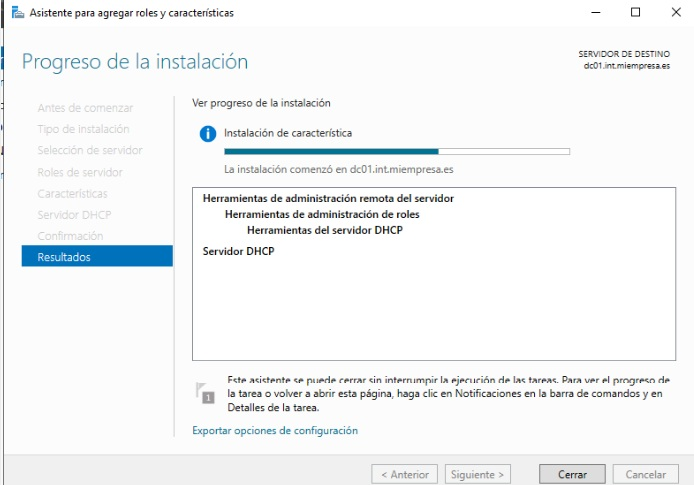
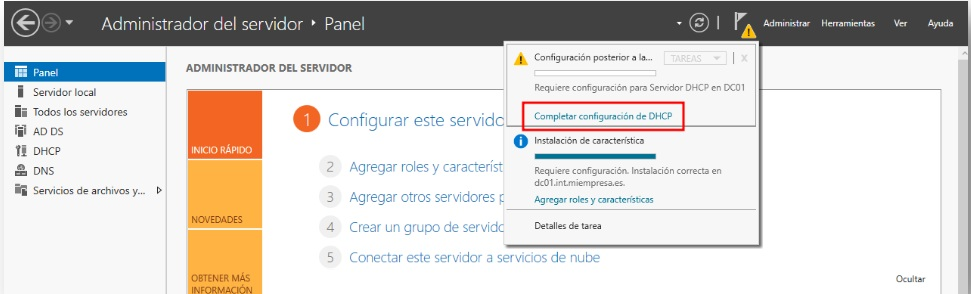
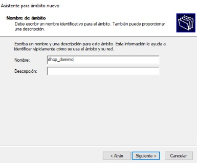
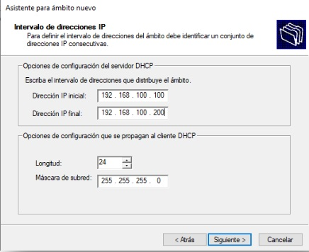
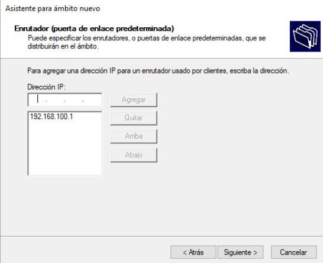
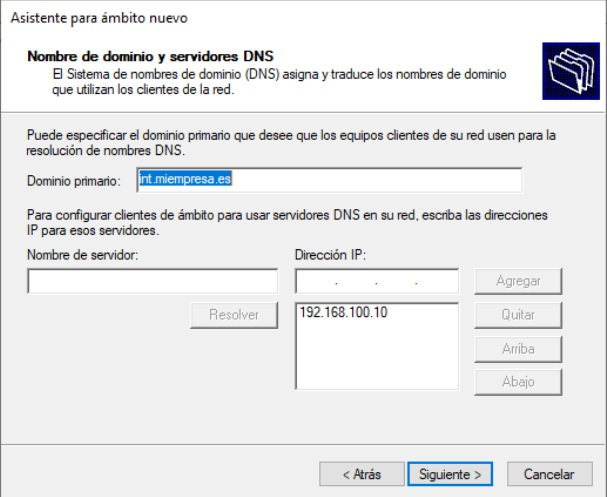

Configuración del servicio de DHCP
Configuración
Para simplificar la configuración de los nuevos equipos que se
añadan al dominio vamos a instalar el servicio DHCP en "dc10" de
manera que configure automáticamente los parámetros de red de los
nuevos equipos. Para ello, desde "Agregar roles y características"
seleccionamos el "role" de DHCP y dejamos que asigne las
características que necesite para finalmente pinchar en "Instalar"

Para completar la puesta en marcha del servicio DHCP es necesario
configurarlo. Podremos hacerlo desde varios puntos, yo seleccionaré
el "Completar configuración DHCP" que aparece en las notificaciones.

El haber instalador el servidor DHCP después de promocionar el
equipo "dc10" a controlador de dominio nos permite configurar el
servicio DHCP teniendo en cuenta las credenciales del administrador
del dominio. Para crear un nuevo ámbito DHCP debemos entrar en el
menú "Herramientas" y seleccionar "DHCP". Allí encontraremos que el
servidor está totalmente identificado con su nombre de dominio.
Desplegaremos la opción de IPv4 para crear en ella un "nuevo ámbito"
y entonces aparecerá un asistente. En la primera ventana podemos
poner un nombre significativo al DHCP, yo usaré "dhcp_dominio"

En la siguiente ventana indicamos el rango de IP que serviremos. Yo usaré desde la 100 a la 200.

Pasaremos algunas ventanas hasta llegar al "enrutador" o "puerta de enlace" donde añadiremos la IP acabada en 1, en mi caso la 192.168.100.1

La siguiente ventana del asistente tiene la información del DNS que ha detectado automáticamente y no es necesario hacer nada.

Por último, activaremos el ámbito y lo probaremos con un equipo cliente.